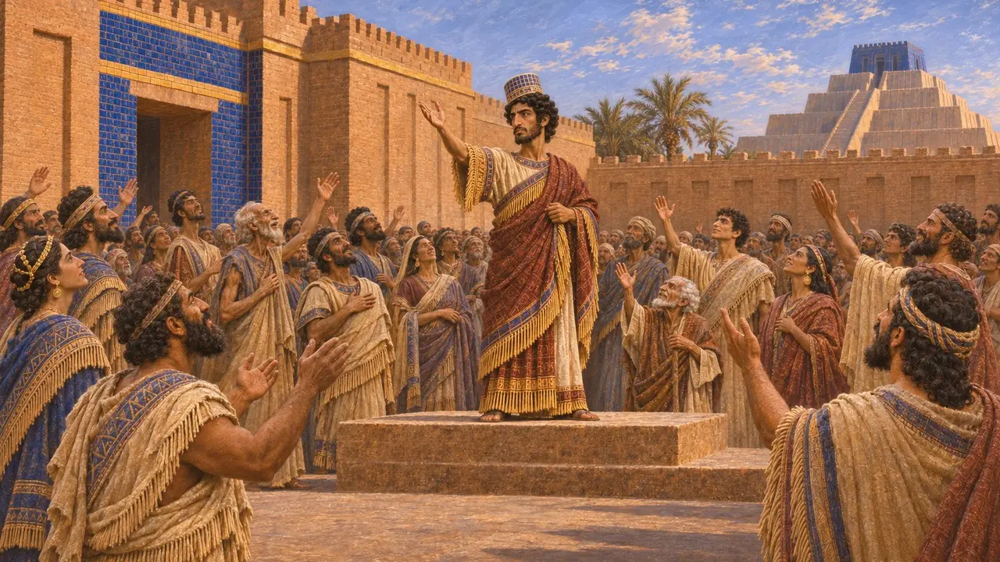
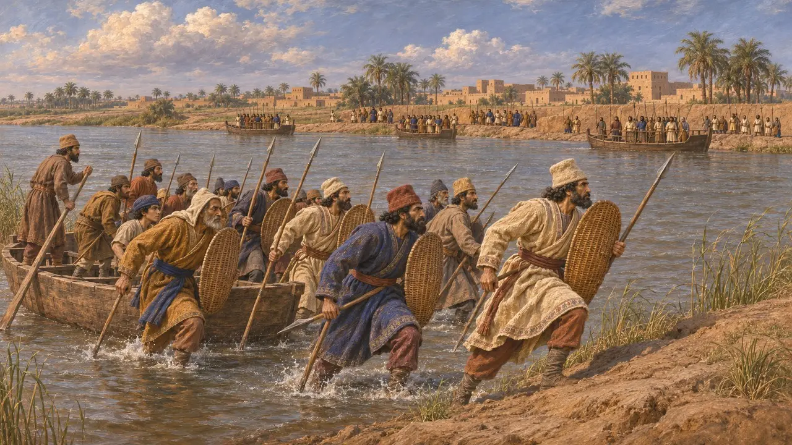
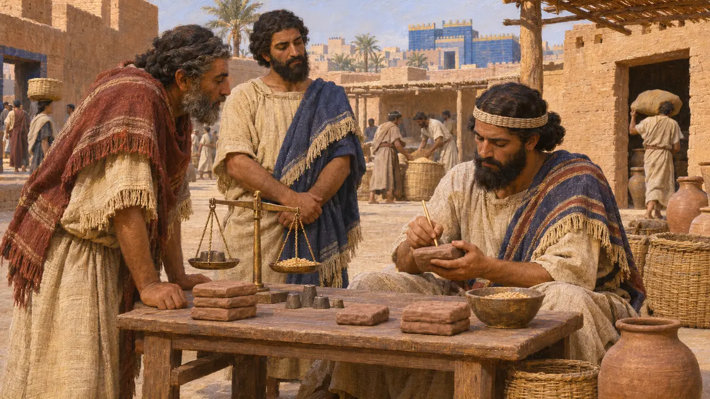
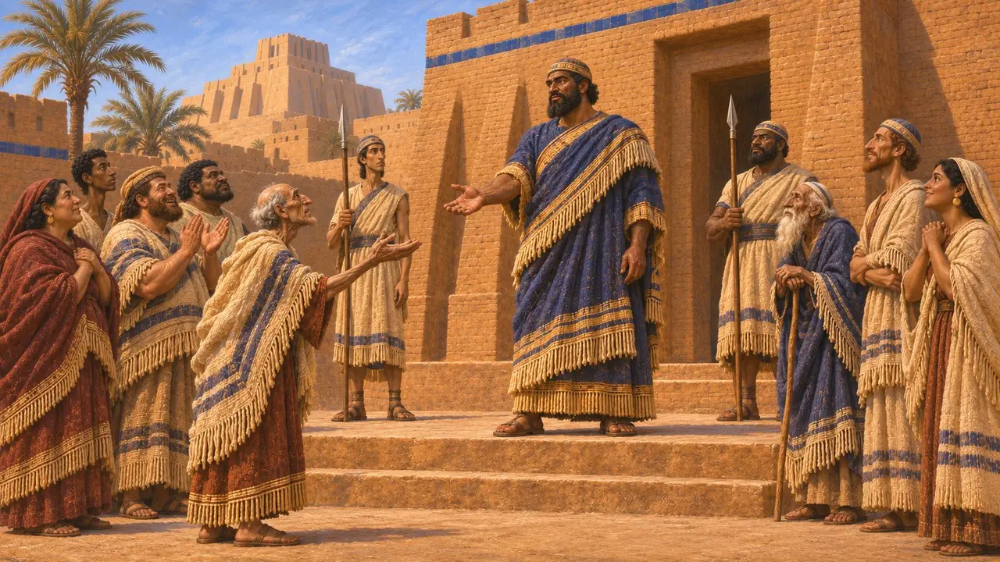
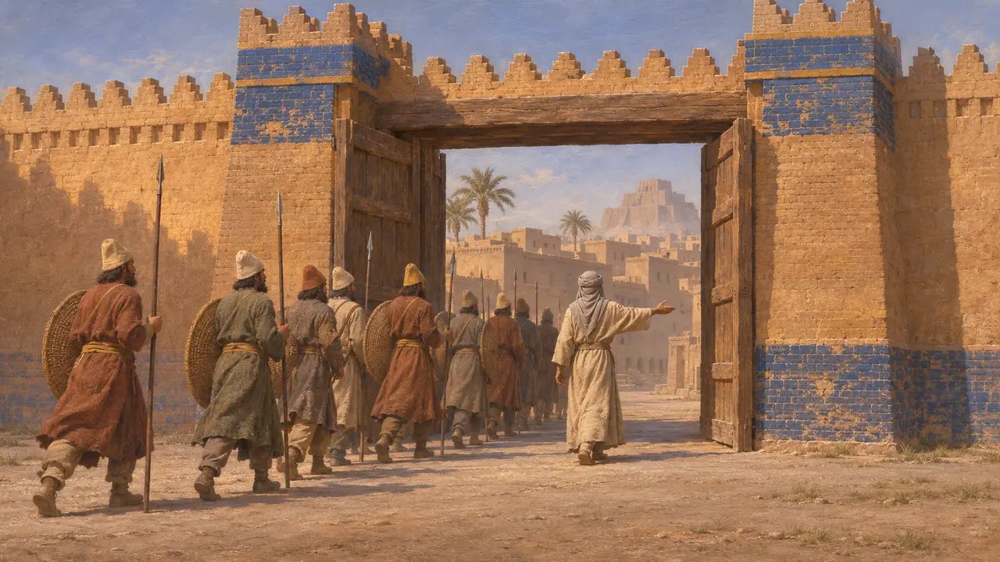

尼丁图-贝勒
取名尼布甲尼撒并反叛大流士的巴比伦人,公元前522年
尼丁图-贝勒是一名巴比伦人,于公元前522年秋夺取巴比伦王位,以尼布甲尼撒之名称王,是同名的第三位国王。大流士在两次战役中击败了他,并在巴比伦将其处死,大概在约两个月之内。这一事件主要见于大流士本人的贝希斯敦铭文和有纪年的巴比伦泥板。
游戏中： 游戏仅在关于尼丁图-贝勒叛乱以及公元前522-521年各次叛乱的事件文章中提到他。他没有专属的单位、建筑或机制。

大流士在贝希斯敦的版本
见于史载大流士说,一个名叫尼丁图-贝勒的巴比伦人,阿尼里之子,欺骗巴比伦人民,自称是那波尼德之子尼布甲尼撒。据铭文记载,整个巴比伦都投向了他。这段文字是国王自己的叙述,而且把每一个叛乱者都说成骗子。
DB §16

底格里斯河与扎扎纳之战
见于史载大流士说,尼丁图-贝勒派船只据守底格里斯河岸。大流士的军队渡过河去,在那里击败了他。随后在幼发拉底河畔一个名叫扎扎纳的地方又打了第二仗,此后尼丁图-贝勒带着少数骑兵逃往巴比伦。大流士随即攻占巴比伦,并在那里处死了他。
DB §18-20

新王治下的巴比伦文书
见于史载在公元前522年末的几周里，巴比伦和其他一些巴比伦尼亚城市的商业泥板，是按尼布甲尼撒的在位年份来纪年的。这表明书吏和当地民众把这位叛乱者当作真正的国王。他是那波尼德之子的说法，唯一的来源就是大流士的铭文。
Dated Babylonian business tablets of 522; Briant, From Cyrus to Alexander, 2002

他是谁,巴比伦为何追随他
争夺中大流士称他为冒充者,但现代历史学家怀疑这并不是事情的全部。这场叛乱发生在冈比西斯去世、大流士崛起,波斯统治动摇之际,而他所用的王号让人想起那位伟大的巴比伦国王。尼丁图-贝勒与那波尼德的家族是否真有关联,仅凭现存证据无法定论。
Kuhrt, The Persian Empire, 2007

希罗多德与巴比伦围城
争夺中希罗多德没有提到尼丁图-贝勒。他讲的是大流士治下巴比伦经历了一场漫长的围城，最后靠佐皮鲁斯的计谋才告终。多数史家认为，这个故事与大流士同样有所记载的、公元前521年阿拉卡后来发动的叛乱有关，而与尼丁图-贝勒的叛乱无关。
Herodotus 3.150-160; DB §49-50
来源
- DB §16-20 (Behistun inscription)
- Dated Babylonian business tablets of 522
- P. Briant, From Cyrus to Alexander, 2002
- A. Kuhrt, The Persian Empire, 2007
- Herodotus 3.150-160